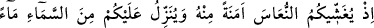
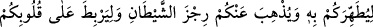
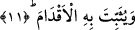

çörek otuyla sürmeler ve o anda iyileşirdi.”
Görülüyor ki kuvvetli bir iman ve itmînan, Melik ve Mennân olan Allah’ın inâyetiyle
kişinin arzu ettiklerini kendisine celb eder. Fakat özellikle bu zamanda böyle kuvvetli
bir iman ve itmînana sahip kimseler gâyet azdır. Yardımcı olan, yalnız Allah’tır.
11. O zaman katından bir güven olmak üzere sizi hafif bir uykuya daldırıyordu;
sizi temizlemek, şeytanın pisliğini (verdiği vesveseyi) sizden gidermek, kalblerinizi
takviye etmek ve ayaklarınızı sabit kılmak için üzerinize gökten bir su (yağmur)
indiriyordu.
Bir gurup müfessirin bildirdiğine göre Allah Teâlâ, Nebî (a.s.)’a kâfirlerin üzerine
yürümesini emredince o da beraberindekilerle birlikte yürüdü. Bedir mevkiine
yaklaşınca yolda iki adama rastladı. Bunlara Kureyş kervanıyla karşılaşıp
karşılaşmadıklarını sordu. Onlar da geceleyin onu gördüklerini söylediler.
Allah Rasûlü’nün huzurunda ashab-ı kiramdan on kişi bulunuyordu. Bunlar derhal o
iki adamı yakaladılar. Bu adamlardan biri Abbas b. Abdülmuttalib’in kölesi Ebû Râfi‘,
diğeri ise Ukbe b. Ebû Muayt’ın kölesi Eslem’di. Bedir kuyusuna su almak için
gelmişlerdi.
Peygamberimiz (a.s.), sorguya çekmeleri için Eslem’i ashabına bıraktı. Kendisi de
Ebû Râfi‘e Mekke’den savaşmak üzere kimlerin yola çıktığı hakkında sormaya başladı.
Ebû Râfi‘, Mekke’de kimsenin kalmayıp hepsinin çıktığını belirtti. Bunun üzerine
Peygamberimiz: “Mekke, bugün ciğerparelerini getiriyor.” buyurdu.
Sonra da onlardan geri dönenlerin olup olmadığını sordu. O da Zühre oğullarından üç
yüz kişiyle Übey b. Serîk’in geri döndüğünü söyledi. Übey, kervanı kurtarmak için
çıkmıştı. Kervan kurtulunca o da döndü. Kavminden ayrılıp geride kaldığı için Nebî
(a.s.) onu “Ahnes” diye isimlendirdi.
Sonra Rasûlullah (a.s.), ashabına yöneldi. Onlar Eslem’e soruyorlar, o da onlara
“Falan, falan çıktı.” diyordu. Ebû Bekir (r.a.) ise asasıyla ona vurup: “Yalan
söylüyorsun. İnsanları korkutmak mı istiyorsun?” diyordu. Bunun üzerine Rasûl-i Ekrem
(s.a.v.) Efendimiz: “Size doğru söylediğinde onu dövüyorsunuz. Yalan söylediğinde ise
bırakıyorsunuz.” buyurdu. Ashab, bu ifadeden Rasûlullah (s.a.v.)’in müşriklerin
durumu hakkında yeterli bilgiye sahip olduğunu anladılar.
Hemen yürüyüşe geçip vâdinin Medîne’ye yakın tarafında suyu olmayan, ayakların
batıp kaybolduğu kırmızı renkli kumdan bir tepenin üzerine indiler. Müşrikler ise